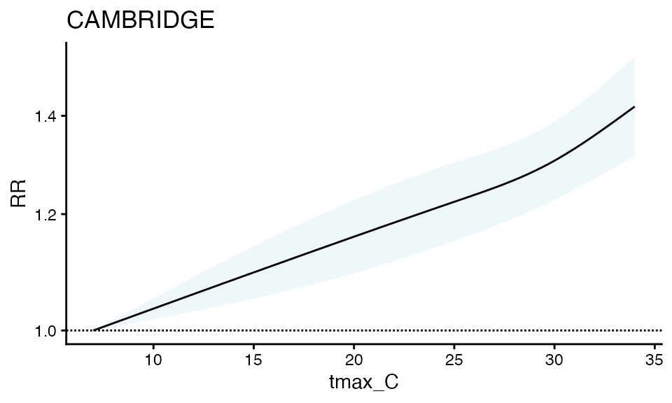
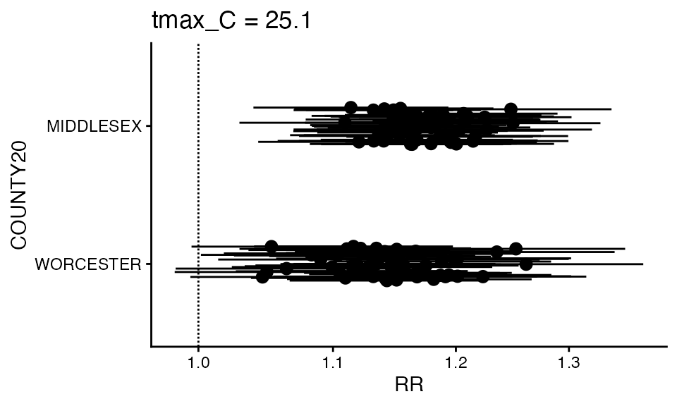
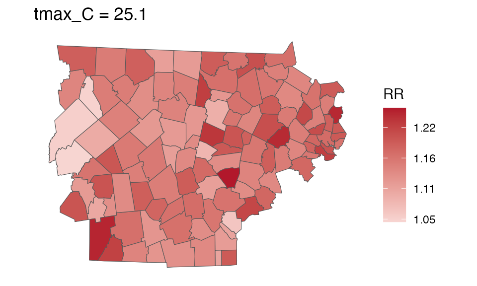
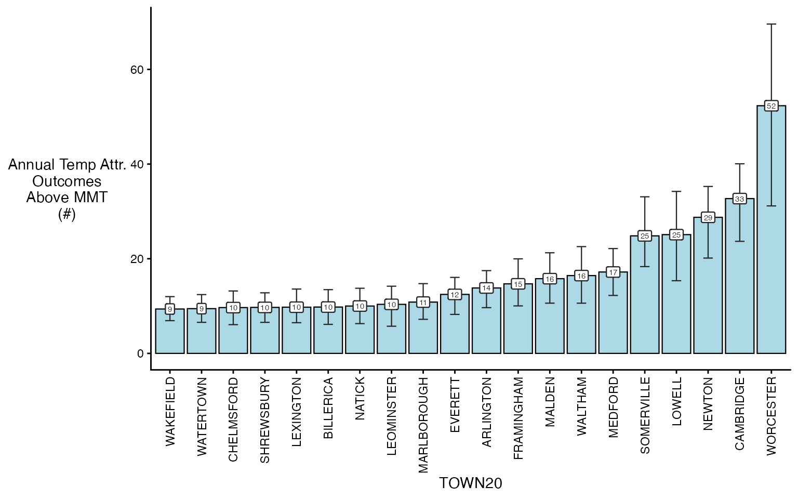
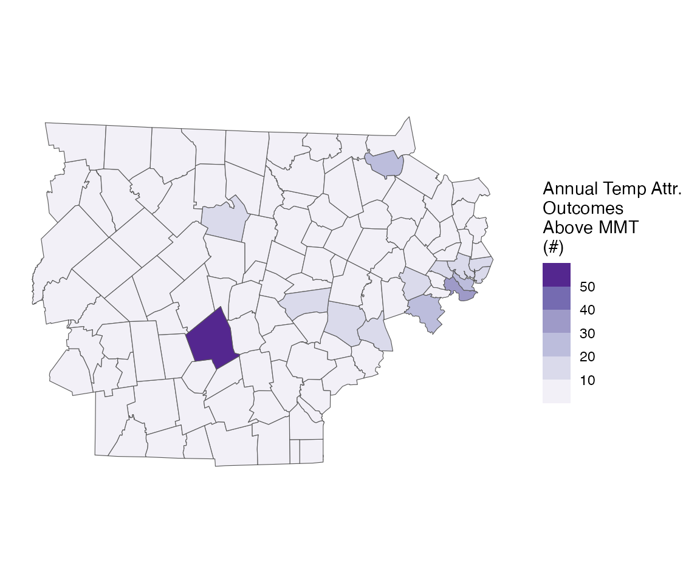
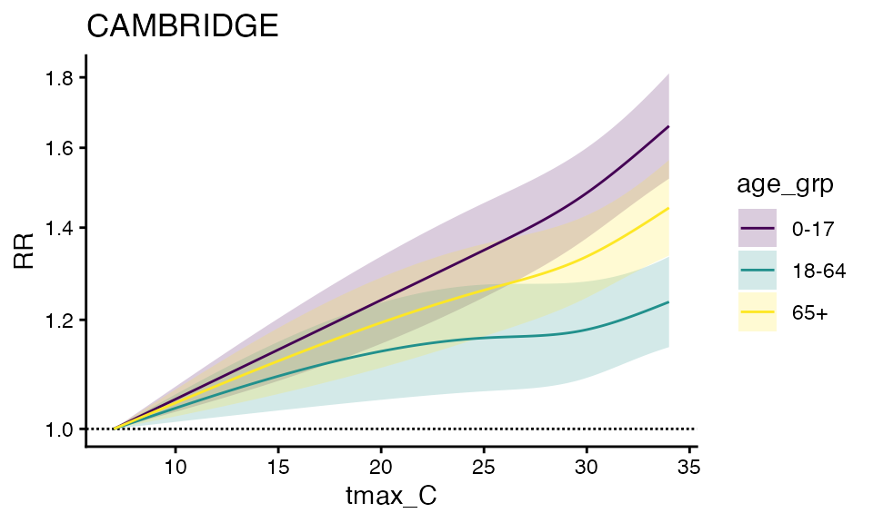
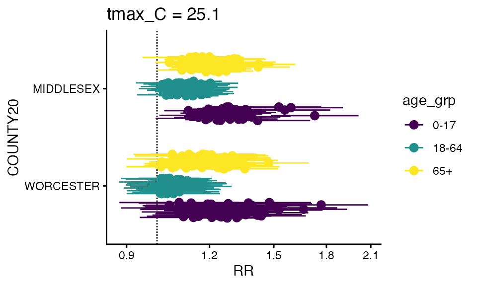
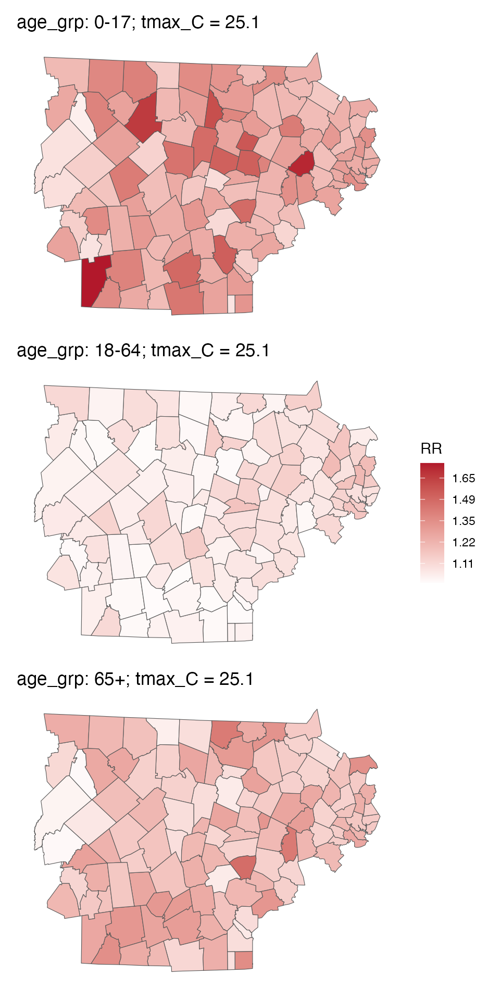
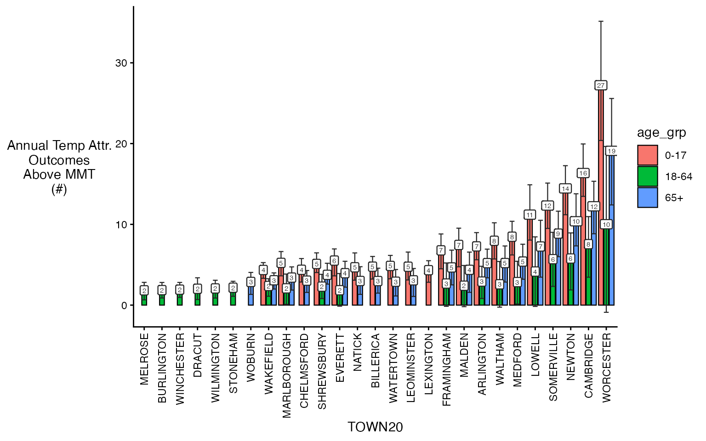
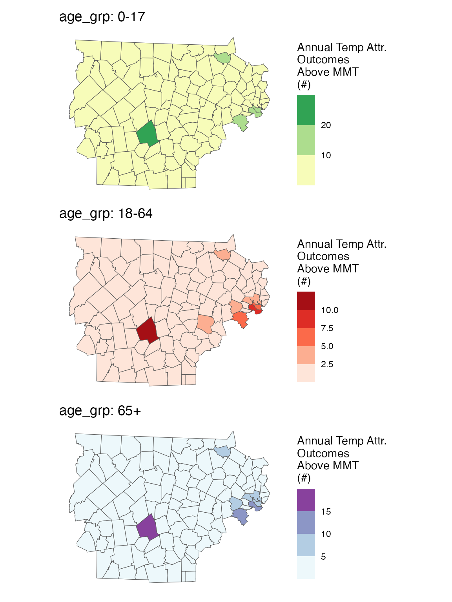

Getting started with `cityHeatHealth`
cityHeatHealth.RmdGetting started with cityHeatHealth
Here is code that shows the basic skeleton of how this package works. We can run the model and then calculate attributable numbers easily, and provide a number of outputs.
Run the model
Exposure
First, create the exposure object - you will need to define the
exposure_columns.
library(data.table)
# load a built-in dataset and get a subset
data("ma_exposure")
exposure_sub <- subset(ma_exposure,COUNTY20 %in% c('MIDDLESEX', 'WORCESTER') &
year(date) %in% 2012:2015)
# define columns of ma_exposure
exposure_columns <- list(
"date" = "date",
"exposure" = "tmax_C",
"geo_unit" = "TOWN20",
"geo_unit_grp" = "COUNTY20"
)
# create the object
ma_exposure_matrix <- make_exposure_matrix(exposure_sub, exposure_columns)
#> Warning in make_exposure_matrix(exposure_sub, exposure_columns): check about any NA, some corrections for this later,
#> but only in certain columnsAnd lets preview this
head(ma_exposure_matrix)
#> date tmax_C TOWN20 COUNTY20 explag1 explag2 explag3 explag4
#> <Date> <num> <char> <char> <num> <num> <num> <num>
#> 1: 2012-05-01 16.4633 ACTON MIDDLESEX 14.0179 14.1931 12.7975 17.5538
#> 2: 2012-05-01 16.5767 ARLINGTON MIDDLESEX 14.1291 14.2293 12.7909 17.6980
#> 3: 2012-05-01 16.5619 ASHBURNHAM WORCESTER 11.8703 11.8568 5.5348 14.4481
#> 4: 2012-05-01 15.5823 ASHBY MIDDLESEX 14.0730 14.2239 12.9341 17.1079
#> 5: 2012-05-01 16.3266 ASHLAND MIDDLESEX 13.8454 14.1018 12.7003 17.3625
#> 6: 2012-05-01 16.2456 ATHOL WORCESTER 14.1087 11.9718 8.0548 13.9967
#> explag5
#> <num>
#> 1: 16.2753
#> 2: 16.2485
#> 3: 11.0525
#> 4: 16.3154
#> 5: 16.1076
#> 6: 11.8158Outcome
Next, create the outcome object. As seen in other tutorials, you can
collapse_to a factor level and get outputs that way later
on.
# load a built-in dataset, and get a subset, for speed
data("ma_deaths")
deaths_sub <- subset(ma_deaths,COUNTY20 %in% c('MIDDLESEX', 'WORCESTER') &
year(date) %in% 2012:2015)
# define columns of ma_deaths
outcome_columns <- list(
"date" = "date",
"outcome" = "daily_deaths",
"factor" = 'age_grp',
"factor" = 'sex',
"geo_unit" = "TOWN20",
"geo_unit_grp" = "COUNTY20"
)
# create the object
ma_outcomes_tbl <- make_outcome_table(deaths_sub, outcome_columns)And lets preview this
head(ma_outcomes_tbl)
#> date TOWN20 COUNTY20 daily_deaths strata
#> <Date> <char> <char> <int> <char>
#> 1: 2012-05-01 ACTON MIDDLESEX 73 ACTON:yr2012:mn5:dow3
#> 2: 2012-05-01 ARLINGTON MIDDLESEX 148 ARLINGTON:yr2012:mn5:dow3
#> 3: 2012-05-01 ASHBURNHAM WORCESTER 15 ASHBURNHAM:yr2012:mn5:dow3
#> 4: 2012-05-01 ASHBY MIDDLESEX 10 ASHBY:yr2012:mn5:dow3
#> 5: 2012-05-01 ASHLAND MIDDLESEX 48 ASHLAND:yr2012:mn5:dow3
#> 6: 2012-05-01 ATHOL WORCESTER 36 ATHOL:yr2012:mn5:dow3
#> strata_total
#> <num>
#> 1: 423
#> 2: 781
#> 3: 81
#> 4: 42
#> 5: 254
#> 6: 189Run the conditional poisson model
we then run a conditional poisson model.
Cross-basis arguments
There are built-in arguments for argvar and
arglag that you can override if you’d like, but the
defaults are:
-
maxlag: default is 5 (days) -
argvar: default isns()and knots at the 50th and 90th percentile of unit-specific exposure. -
arglag: default islist(fun = 'ns', knots = logknots(maxlag, nk = 2))
You can also affect the global centering point:
- the default behavior is
global_cen = NULL, meaning that the mininum RR will be used - you can override this by setting
global_cen
Model types
Now you have several options for running the conditional poisson model:
| Design | Function | Description |
|---|---|---|
| 1-stage design | condPois_1stage |
Produces a single set beta coefficients across all included spatial
units. If multiple geo_units are present in the input
objects, multi_zone = TRUE must be set. This option does
not use mixmeta or blup. |
| 2-stage design | condPois_2stage |
Estimates beta coefficients for each spatial unit and then uses
mixmeta and blup to obtain more stable
estimates. |
| Spatial Bayes | condPois_sb |
Also estimates beta coefficients for each spatial unit, but applies
Bayesian methods to stabilize estimates by borrowing information from
neighboring spatial units, rather than from the full dataset as in
mixmeta. This approach is especially useful in settings
with small outcome numbers. |
We show code for each but just run condPois_2stage in
this vignette.
ma_model <- condPois_2stage(ma_exposure_matrix, ma_outcomes_tbl)For condPois_1stage the call would look like this, where
you’d need to add the argument multi_zone = T because there
are multiple geo_units in
ma_exposure_matrix:
ma_model <- condPois_1stage(ma_exposure_matrix, ma_outcomes_tbl, multi_zone = T)See vignette("one_stage_demo") for more details. Note
that forest_plot and spatial_plot are not
implemented for condPois_1stage since you can get all of
that information from the RR plot.
And for condPois_sb, the only additional information
you’d need is a shapefile showing how the geo_units are
arranged, in this case ma_towns (in a test run this code
took 20 minutes to complete for the full MA dataset [with maybe some
additional bugs to work out]):
data("ma_towns")
ma_model <- condPois_sb(ma_exposure_matrix, ma_outcomes_tbl, ma_towns)See vignette("bayesian_demo") for more details.
Plot outputs
And are several plots you can make.
First, a basic RR plot by geo_unit:
plot(ma_model, "CAMBRIDGE")
You can also make a forest plot at a specific exposure value
forest_plot(ma_model, exposure_val = 25.1)
#> Warning in forest_plot.condPois_2stage(ma_model, exposure_val = 25.1): plotting
#> by group since n_geos > 20
You can also make a spatial plot at a specific exposure value:
spatial_plot(ma_model, shp = ma_towns, exposure_val = 25.1)
getRR
For your own purposes, each of these objects has a getRR
function
getRR(ma_model)
#> TOWN20 COUNTY20 tmax_C RR RRlb RRub model_class
#> <char> <char> <num> <num> <num> <num> <char>
#> 1: ACTON MIDDLESEX 7.0 1.000000 1.0000000 1.000000 condPois_2stage
#> 2: ACTON MIDDLESEX 7.1 1.000516 0.9999447 1.001088 condPois_2stage
#> 3: ACTON MIDDLESEX 7.2 1.001033 0.9998894 1.002177 condPois_2stage
#> 4: ACTON MIDDLESEX 7.3 1.001549 0.9998343 1.003267 condPois_2stage
#> 5: ACTON MIDDLESEX 7.4 1.002067 0.9997795 1.004359 condPois_2stage
#> ---
#> 32510: WORCESTER WORCESTER 33.6 1.288946 1.2000454 1.384432 condPois_2stage
#> 32511: WORCESTER WORCESTER 33.7 1.290732 1.2010888 1.387065 condPois_2stage
#> 32512: WORCESTER WORCESTER 33.8 1.292520 1.2021282 1.389709 condPois_2stage
#> 32513: WORCESTER WORCESTER 33.9 1.294311 1.2031641 1.392363 condPois_2stage
#> 32514: WORCESTER WORCESTER 34.0 1.296105 1.2041968 1.395027 condPois_2stageCalculate attributable numbers
See more details in vignette("attributable_number"), but
here is a brief demo
Population data
The first step of calculating attributable numbers is having a population data estimate.
This varies a lot by place and dataset, so we don’t include
functionality for it (but an example of how this could be done can be
seen in vignette("get_pop_estimates")).
Assume you are starting with a dataset for the entire timeframe that looks like this:
library(data.table)
data("ma_pop_data")
setDT(ma_pop_data)
ma_pop_data
#> TOWN20 Female_0-17 Female_18-64 Female_65+ Male_0-17 Male_18-64
#> <char> <num> <num> <num> <num> <num>
#> 1: BARNSTABLE 3899 15017 6014 4499 14035
#> 2: BOURNE 1891 5751 3212 1489 5302
#> 3: BREWSTER 634 2518 2007 833 2628
#> 4: CHATHAM 163 1477 1759 480 1265
#> 5: DENNIS 573 3792 3133 784 4101
#> ---
#> 347: WEST BOYLSTON 619 2021 1107 604 2554
#> 348: WEST BROOKFIELD 343 1162 578 243 1002
#> 349: WESTMINSTER 847 2371 1131 762 2028
#> 350: WINCHENDON 1254 3318 711 1031 3134
#> 351: WORCESTER 18779 67750 15995 21129 69365
#> Male_65+
#> <num>
#> 1: 5458
#> 2: 2810
#> 3: 1721
#> 4: 1463
#> 5: 2359
#> ---
#> 347: 790
#> 348: 495
#> 349: 1081
#> 350: 924
#> 351: 11173Need to do some transformations:
- pivot longer
- variable clean
Note again, this processing will vary by application so this approach is not prescriptive !
Pivot longer:
ma_pop_data_long <- melt(
ma_pop_data,
id.vars = "TOWN20",
variable.name = "sex_age",
value.name = "population"
)Variable clean:
ma_pop_data_long$sex_age <- as.character(ma_pop_data_long$sex_age)
varnames <- strsplit(ma_pop_data_long$sex_age, "_", fixed = T)
varnames <- data.frame(do.call(rbind, varnames))
names(varnames) <- c('sex', 'age_grp')
rr <- which(varnames$sex == 'Female')
varnames$sex[rr] <- 'F'
rr <- which(varnames$sex == 'Male')
varnames$sex[rr] <- 'M'
ma_pop_data_long$sex = varnames$sex
ma_pop_data_long$age_grp = varnames$age_grp
ma_pop_data_long$sex_age <- NULLLets look at it:
ma_pop_data_long
#> TOWN20 population sex age_grp
#> <char> <num> <char> <char>
#> 1: BARNSTABLE 3899 F 0-17
#> 2: BOURNE 1891 F 0-17
#> 3: BREWSTER 634 F 0-17
#> 4: CHATHAM 163 F 0-17
#> 5: DENNIS 573 F 0-17
#> ---
#> 2102: WEST BOYLSTON 790 M 65+
#> 2103: WEST BROOKFIELD 495 M 65+
#> 2104: WESTMINSTER 1081 M 65+
#> 2105: WINCHENDON 924 M 65+
#> 2106: WORCESTER 11173 M 65+We assume that these properties hold for the entire timeframe of our analysis, but you could also make a version of this dataset with a ‘year’ column.
Calculate AN
Now, you can easily calculate attributrable numbers (and rates) using
calcAN().
There are two new inputs that this function needs, in addition to population data:
-
agg_type- what spatial resolution are you summarizing to: ‘geo_unit’, ‘geo_unit_grp’, or ‘all’ -
join_cols- which columns inma_outcomes_tblare you joiningma_pop_data_longby
ma_AN <- calc_AN(ma_model, ma_outcomes_tbl, ma_pop_data_long,
agg_type = 'TOWN20', join_cols = 'TOWN20')From this you get a rate_table :
ma_AN$`_`$rate_table
#> TOWN20 COUNTY20 population above_MMT mean_annual_attr_rate_est
#> <char> <char> <num> <lgcl> <num>
#> 1: ACTON MIDDLESEX 23864 TRUE 24.56105
#> 2: ACTON MIDDLESEX 23864 FALSE 0.00000
#> 3: ARLINGTON MIDDLESEX 45906 TRUE 30.11861
#> 4: ARLINGTON MIDDLESEX 45906 FALSE 0.00000
#> 5: ASHBURNHAM WORCESTER 6337 TRUE 21.44153
#> ---
#> 224: WINCHESTER MIDDLESEX 22809 FALSE 0.00000
#> 225: WOBURN MIDDLESEX 40992 TRUE 22.50236
#> 226: WOBURN MIDDLESEX 40992 FALSE 0.00000
#> 227: WORCESTER WORCESTER 204191 TRUE 25.62654
#> 228: WORCESTER WORCESTER 204191 FALSE 0.00000
#> mean_annual_attr_rate_lb mean_annual_attr_rate_ub
#> <num> <num>
#> 1: 14.16036 34.49521
#> 2: 0.00000 0.00000
#> 3: 21.05122 38.09419
#> 4: 0.00000 0.00000
#> 5: 13.12398 29.34617
#> ---
#> 224: 0.00000 0.00000
#> 225: 14.48530 29.36996
#> 226: 0.00000 0.00000
#> 227: 15.26067 34.07675
#> 228: 0.00000 0.00000and a number_table:
ma_AN$`_`$number_table
#> TOWN20 COUNTY20 population above_MMT mean_annual_attr_num_est
#> <char> <char> <num> <lgcl> <num>
#> 1: ACTON MIDDLESEX 23864 TRUE 5.861250
#> 2: ACTON MIDDLESEX 23864 FALSE 0.000000
#> 3: ARLINGTON MIDDLESEX 45906 TRUE 13.826250
#> 4: ARLINGTON MIDDLESEX 45906 FALSE 0.000000
#> 5: ASHBURNHAM WORCESTER 6337 TRUE 1.358750
#> ---
#> 224: WINCHESTER MIDDLESEX 22809 FALSE 0.000000
#> 225: WOBURN MIDDLESEX 40992 TRUE 9.224167
#> 226: WOBURN MIDDLESEX 40992 FALSE 0.000000
#> 227: WORCESTER WORCESTER 204191 TRUE 52.327083
#> 228: WORCESTER WORCESTER 204191 FALSE 0.000000
#> mean_annual_attr_num_lb mean_annual_attr_num_ub
#> <num> <num>
#> 1: 3.3792292 8.231937
#> 2: 0.0000000 0.000000
#> 3: 9.6637708 17.487521
#> 4: 0.0000000 0.000000
#> 5: 0.8316667 1.859667
#> ---
#> 224: 0.0000000 0.000000
#> 225: 5.9378125 12.039333
#> 226: 0.0000000 0.000000
#> 227: 31.1609167 69.581667
#> 228: 0.0000000 0.000000And you can plot either one
plot(ma_AN, "num", above_MMT = T)
#> Warning in plot.calcAN(ma_AN, "num", above_MMT = T): plot elements > 20,
#> subsetting to top 20
You can also plot spatially
spatial_plot(ma_AN, shp = ma_towns, table_type = "num", above_MMT = T)
Running with factors
Very often, we also get asked to run these results, with differences by both modifiable and non-modifiable factors:
- age group
- sex
- the prevalence of air conditioning in a certain town
We can easily do this, by using the collapse_to
argument:
ma_outcomes_tbl_fct <- make_outcome_table(
deaths_sub, outcome_columns, collapse_to = 'age_grp')Lets look at the result:
head(ma_outcomes_tbl_fct)
#> date TOWN20 COUNTY20 age_grp daily_deaths
#> <Date> <char> <char> <char> <int>
#> 1: 2012-05-01 ACTON MIDDLESEX 0-17 25
#> 2: 2012-05-01 ACTON MIDDLESEX 18-64 24
#> 3: 2012-05-01 ACTON MIDDLESEX 65+ 24
#> 4: 2012-05-01 ARLINGTON MIDDLESEX 0-17 50
#> 5: 2012-05-01 ARLINGTON MIDDLESEX 18-64 48
#> 6: 2012-05-01 ARLINGTON MIDDLESEX 65+ 50
#> strata strata_total
#> <char> <num>
#> 1: ACTON:yr2012:mn5:dow3:age_grp0-17 147
#> 2: ACTON:yr2012:mn5:dow3:age_grp18-64 136
#> 3: ACTON:yr2012:mn5:dow3:age_grp65+ 140
#> 4: ARLINGTON:yr2012:mn5:dow3:age_grp0-17 270
#> 5: ARLINGTON:yr2012:mn5:dow3:age_grp18-64 249
#> 6: ARLINGTON:yr2012:mn5:dow3:age_grp65+ 262Now, all of our other functions can stay the same:
Running the model (adding the verbose argument so you
can follow along)
ma_model_fct <- condPois_2stage(ma_exposure_matrix, ma_outcomes_tbl_fct,
verbose = 1)
#> < age_grp : 0-17 >
#> -- validation passed
#> -- stage 1
#> -- mixmeta
#> -- stage 2
#> < age_grp : 18-64 >
#> -- validation passed
#> -- stage 1
#> -- mixmeta
#> -- stage 2
#> < age_grp : 65+ >
#> -- validation passed
#> -- stage 1
#> -- mixmeta
#> -- stage 2And plotting the output
plot(ma_model_fct, "CAMBRIDGE")
forest_plot(ma_model_fct, exposure_val = 25.1)
#> Warning in forest_plot.condPois_2stage_list(ma_model_fct, exposure_val = 25.1):
#> plotting by group since n_geos > 20
You can also make a spatial plot at a specific exposure value:
spatial_plot(ma_model_fct, shp = ma_towns, exposure_val = 25.1)
You can also getRR:
getRR(ma_model_fct)
#> TOWN20 COUNTY20 tmax_C RR RRlb RRub age_grp
#> <char> <char> <num> <num> <num> <num> <char>
#> 1: ACTON MIDDLESEX 7.0 1.000000 1.0000000 1.000000 0-17
#> 2: ACTON MIDDLESEX 7.1 1.000694 0.9999329 1.001456 0-17
#> 3: ACTON MIDDLESEX 7.2 1.001389 0.9998659 1.002915 0-17
#> 4: ACTON MIDDLESEX 7.3 1.002085 0.9997992 1.004375 0-17
#> 5: ACTON MIDDLESEX 7.4 1.002781 0.9997327 1.005838 0-17
#> ---
#> 97538: WORCESTER WORCESTER 33.6 1.300465 1.2147953 1.392175 65+
#> 97539: WORCESTER WORCESTER 33.7 1.302040 1.2155758 1.394654 65+
#> 97540: WORCESTER WORCESTER 33.8 1.303616 1.2163410 1.397154 65+
#> 97541: WORCESTER WORCESTER 33.9 1.305195 1.2170919 1.399676 65+
#> 97542: WORCESTER WORCESTER 34.0 1.306775 1.2178291 1.402218 65+
#> model_class
#> <char>
#> 1: condPois_2stage_list
#> 2: condPois_2stage_list
#> 3: condPois_2stage_list
#> 4: condPois_2stage_list
#> 5: condPois_2stage_list
#> ---
#> 97538: condPois_2stage_list
#> 97539: condPois_2stage_list
#> 97540: condPois_2stage_list
#> 97541: condPois_2stage_list
#> 97542: condPois_2stage_listAnd finally, you can calcAN, note that both
ma_outcomes_tbl_fct and ma_model_fct need to
have factors, again adding the verbose so you can see the progress
ma_AN_fct <- calc_AN(ma_model_fct,
ma_outcomes_tbl_fct,
ma_pop_data_long,
agg_type = 'TOWN20', join_cols = 'TOWN20',
verbose = 1)
#> < age_grp : 0-17 >
#> -- validation passed
#> -- estimate in each geo_unit
#> -- summarize by simulation
#> < age_grp : 18-64 >
#> -- validation passed
#> -- estimate in each geo_unit
#> -- summarize by simulation
#> < age_grp : 65+ >
#> -- validation passed
#> -- estimate in each geo_unit
#> -- summarize by simulationAnd you can plot either one – some empty bars not because there are no adults there but because this takes the top 20 in each bin, which don’t have to overlap. Probably a better way to do this in the future but fine for diagnostics.
plot(ma_AN_fct, "num", above_MMT = T)
#> Warning in plot.calcAN_list(ma_AN_fct, "num", above_MMT = T): plot elements >
#> 20, subsetting to top 20
#> Warning in plot.calcAN_list(ma_AN_fct, "num", above_MMT = T): plot elements >
#> 20, subsetting to top 20
#> Warning in plot.calcAN_list(ma_AN_fct, "num", above_MMT = T): plot elements >
#> 20, subsetting to top 20
You can also plot spatially
spatial_plot(ma_AN_fct, shp = ma_towns, table_type = "num", above_MMT = T)